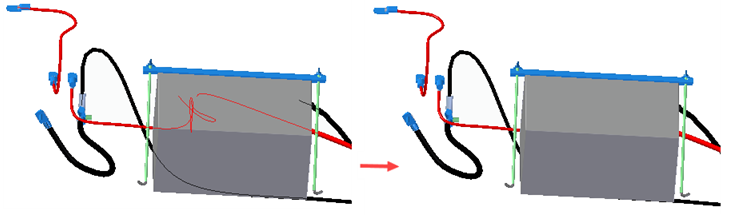

Show/Hide Component Harness Paths command
Displays or hides the paths in a harness assembly in the Assembly and Electrical Routing environments. The displaying and hiding of the harness path occurs for the main assembly and any sub-assemblies in one operation.
If an assembly consists of sub-assemblies that contain harnesses, you can hide the harness paths for all sub-assemblies in a single operation. After you hide the paths, the assembly appears clean and the physical conductors remain displayed, which represents the routing for the wiring harness.
